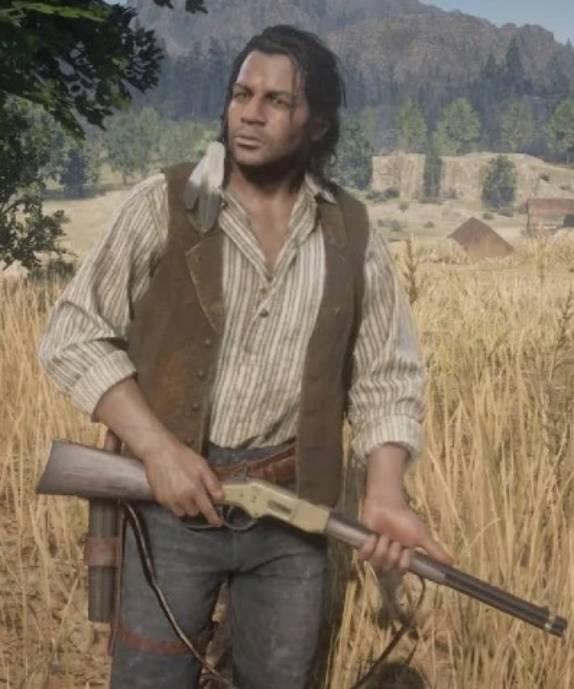
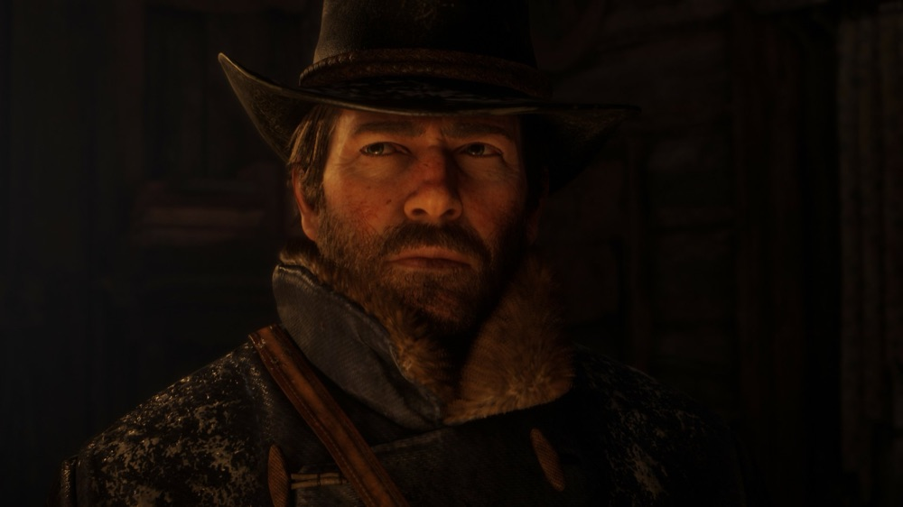
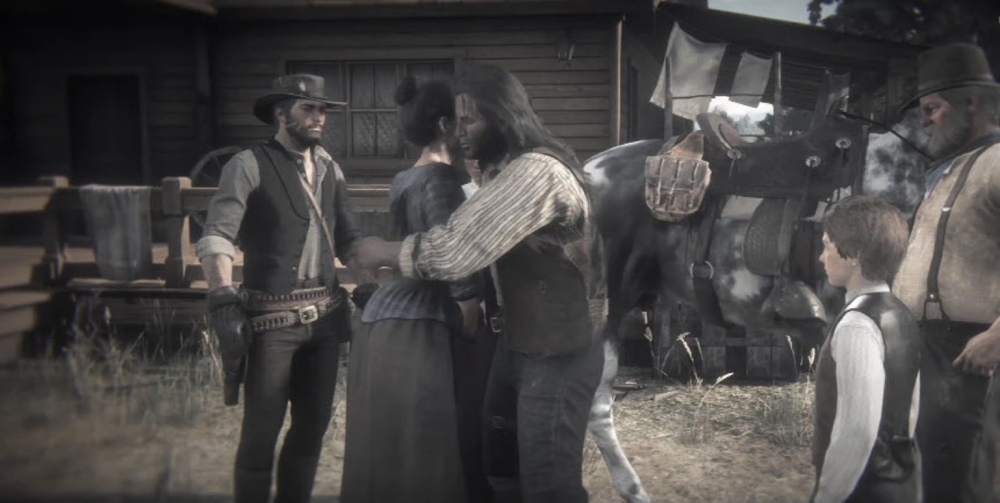

Character · Van der Linde gang Charles Smith Survivor Tracker & gunman Van der Linde gang Voiced by Noshir Dalal By Joseph Lambert · Updated June 23, 2026 Charles Smith is one of the most quietly admirable members of the Van der Linde gang in Red Dead Redemption 2: a skilled tracker, hunter and fighter of African American and Native American descent. Reserved and deeply principled, he becomes one of Arthur Morgan's most trusted companions. Having joined the gang only about a year before the story begins, Charles nonetheless proves one of its most capable and level-headed members, and one of the few to walk away from its collapse with his honour, and his life, intact. He was voiced by Noshir Dalal. StatusAlive (last known) HeritageAfrican American and Native American NationalityAmerican AffiliationVan der Linde gang RoleTracker, hunter and gunman GamesRed Dead Redemption 2, Red Dead Online Voiced byNoshir Dalal Biography A man of two worlds Charles Smith is of mixed heritage: his father was African American, his mother Native American. Orphaned young and left to make his own way in a hostile frontier, he grew into a self-reliant survivor, an expert hunter, tracker and bare-knuckle fighter who reads the land better than almost anyone in the gang. Joining the gang Charles joined the Van der Linde gang only about a year before the events of Red Dead Redemption 2, yet quickly became indispensable. He partners often with Arthur Morgan, the two sharing hunts, scrapes and a mutual, unspoken respect.  Charles Smith, the gang's steady hand and finest tracker. A conscience in a falling gang As the gang unravels, Charles stands out for his decency. He defends those who cannot defend themselves, helps the Wapiti people against brutal injustice, and stays loyal to the gang's better values even as Dutch abandons them. Personality Charles is calm, thoughtful and economical with words, a man who acts rather than boasts. He has a strong moral core and a quiet anger at cruelty and injustice, having faced plenty of both for who he is. Where others in the gang are driven by greed or loyalty to Dutch, Charles is guided by his own sense of right. It is what makes him one of the few members players trust completely, and one of the few who earns a future. Relationships  Arthur Morgan His closest friend in the gang. Charles and Arthur hunt and fight side by side, and Charles helps carry Arthur through his final, hardest days. John Marston A brother-in-arms he stands by long after the gang is gone, helping John rebuild and, later, settle the score with Micah. Sadie Adler A fellow survivor who rides with him and John on the 1907 hunt that finally ends Micah Bell. Dutch van der Linde The leader he follows out of loyalty to the gang's ideals, growing disillusioned as Dutch betrays them. Micah Bell The traitor he helps hunt down at Mount Hagen, closing the book on the gang's destroyer. Fate and later life Charles survives the fall of the Van der Linde gang. In the epilogue, set years later, he reappears to help John Marston build his ranch at Beecher's Hope and stands with him when the past comes calling. He rides alongside John and Sadie Adler on the 1907 hunt for Micah Bell, helping bring the traitor down. With that chapter closed, Charles sets off north toward Canada, hoping to find a place to belong and, perhaps, a family of his own, one of the rare gang members to ride into a hopeful future.  Charles rides on, one of the few to earn a future. Behind the scenes Charles was performed by Noshir Dalal through voice and motion capture, in a performance praised for its restraint and dignity. The same year, Dalal also voiced the lead in Sekiro: Shadows Die Twice, a breakout double that put him firmly on the map. Charles is widely read as one of the game's moral compasses, a character whose quiet decency throws the gang's decline into sharp relief. Reception and legacy Charles Smith is a strong fan favourite, admired for his competence, his calm and the rare grace of a Red Dead character who survives with his honour intact. He is often cited among the characters players would most like to see return, and a model for how the series writes quiet, principled strength. Trivia Charles is of African American and Native American descent, and faces prejudice for it across the story. He joined the Van der Linde gang only about a year before the events of the game. He is an expert with the bow and a formidable bare-knuckle fighter. He is one of the few major gang members to survive the story. Gallery Charles Smith in Red Dead Redemption 2. Riding on to a new life.